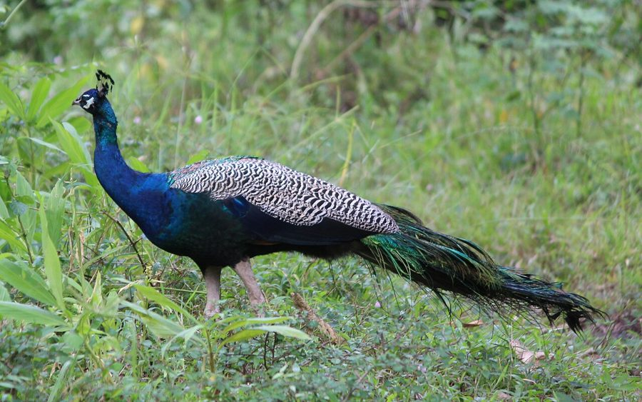

मोरIndian Peafowl
Pavo cristatus · Phasianidae · BRD-0009

- Scientific name
- Pavo cristatus Linnaeus, 1758
- Family
- Phasianidae
- Hindi
- मोर / मयूर
- Status here
- native
- IUCN
- LC
When to look कब देखें
Present all year.
मोर / Indian Peafowl
Pavo cristatus Linnaeus, 1758 — Phasianidae
मोर — भारत का राष्ट्रीय पक्षी है। पूर्वी UP में यह खेतों की मेड़ों पर, आम के बागों में, और मंदिर परिसरों में आम दिखता है। बारिश से पहले नर मोर की आवाज़ — "पियाँव, पियाँव" — मानसून के आगमन का संकेत मानी जाती है। पंखों का नर्तन (ट्रेन डिस्प्ले) प्रकृति के सबसे प्रसिद्ध दृश्यों में से एक है — पर यह असल में मादाओं को आकर्षित करने की जैविक प्रक्रिया है।
हिंदी परिचय Hindi Overview
मोर (Pavo cristatus) भारत का राष्ट्रीय पक्षी है। पूर्वी UP में यह खेतों की मेड़ों पर, आम के बागों में, और मंदिर परिसरों में आम दिखता है। बारिश से पहले नर मोर की आवाज़ — "पियाँव, पियाँव" — मानसून के आगमन का संकेत मानी जाती है। पंखों का नर्तन (ट्रेन डिस्प्ले) प्रकृति के सबसे प्रसिद्ध दृश्यों में से एक है — पर यह असल में मादाओं को आकर्षित करने की जैविक प्रक्रिया है।
Quick Identification त्वरित पहचान
| Feature | Description |
|---|---|
| Size | Large bird; Male 1.9–2.3 m total length (including train); Female 1.0–1.1 m; weight 3–6 kg |
| Male plumage | Iridescent blue-green head, neck, and breast; long ornamental train with eyespots (ocelli) |
| Female plumage | Mottled brown overall; white face and belly; metallic green collar on neck; no train |
| Crest | Spatulated fan-like blue-green crest on top of the head in both sexes |
| In flight | Powerful but heavy short-distance flier; loud wing beats; brown flight feathers |
| Voice | Loud, screaming, far-carrying pi-yaon call, especially active during monsoon |
Field tip: Even without seeing the bird, the loud pi-yaon call is unmistakable and can carry over 1 km. Peafowl are commonly seen walking along field margins at dawn or roosting high in mature mango and banyan trees at dusk.
Morphology आकारिकी
Biometrics (northern Indian population):
| Measurement | Range |
|---|---|
| Total length | 1000–1150 mm (female); 1800–2300 mm (male including train) |
| Wing (flattened chord) | 440–500 mm (male); 380–420 mm (female) |
| Tail | 400–450 mm (male tail coverts up to 1600 mm); 320–375 mm (female) |
| Tarsus | 140–155 mm (male); 120–135 mm (female) |
| Bill (culmen from base) | 40–46 mm |
| Weight | 4.0–6.0 kg (male); 2.7–4.0 kg (female) |
Male: The iconic iridescent blue-green plumage covers head, neck, and breast. The "train" is not the tail but the massively elongated upper tail covert feathers — 150 or more, each tipped with an iridescent eyespot (ocellus). The true tail beneath is brown and short. Blue crest on head (spatulated feathers). Red facial skin around eye.
Female: Brown overall, paler below, white face patch, green neck with metallic sheen. Smaller (1.0–1.1 m). Crest smaller and browner. No train. Young males (peacocks in first year) resemble females.
Wing: Large, broad — despite the bulk, peafowl fly powerfully over short distances and roost in tall trees at night.
Vocalisations
The Indian Peafowl is extremely vocal, especially during the breeding and monsoon season.
- Loud scream: The characteristic pi-yaon or may-awe call, repeated loudly, carrying up to 1.5 km.
- Ka-aan call: A harsh, trumpeting ka-aan given when alarmed, especially when ground predators like dogs or mongooses are spotted.
- Hiss and honk: Low-pitched calls exchanged between females and chicks, or soft honking by foraging groups.
Ecological Role पारिस्थितिक भूमिका
Omnivore: Peafowl are highly opportunistic feeders — seeds, berries, insects, snakes (including venomous species), small lizards, frogs, small rodents. In eastern UP, they are particularly valued as cobra and viper predators near villages.
Pest control: A flock of peafowl walking through fields consumes large quantities of grasshoppers, beetles, termites, and caterpillars — a genuine ecosystem service to farmers.
Agricultural pest: The same birds damage standing grain crops (especially sorghum, maize, wheat) and vegetables. This creates a genuine human-wildlife conflict in villages outside protected areas — farmers tolerate them due to legal protection (Schedule I) and cultural respect.
Seed dispersal: Fleshy fruits (figs, berries) consumed and seeds dispersed in droppings.
Life Cycle / Phenology जीवन चक्र
- March–July: Train display (dancing) by males — breeding season.
- June–July: Calling intensifies at monsoon onset.
- June–August: Nesting — female lays 4–8 pale brown eggs in scrub.
- August–September: Chicks hatch; female raises chicks alone.
- October–February: Non-breeding; flocks forage in fields.
- January–March: Train feathers moult and regrow annually.
The display mechanism: The male erects his train into a vertical fan (up to 2.3 m wide) and vibrates it, creating an iridescent shimmer. The eyespots are UV-reflective — the female sees a more dramatic display than the human eye perceives. Darwin used peafowl display as a key example of sexual selection.
Monsoon call: The "piyaon" call intensifies dramatically at monsoon onset. Folk wisdom treats it as a reliable rain predictor — and it is: the birds respond to pre-monsoon humidity and barometric pressure changes.
Host Plants or Prey आहार
Primary diet:
- Seeds of grain crops: wheat (Triticum aestivum), maize (Zea mays), and sorghum
- Fruits of Banyan (Ficus benghalensis), Peepal (Ficus religiosa), and wild berries
- Insects: beetles, termites, grasshoppers, and caterpillars
- Small vertebrates: lizards, frogs, rodents, and snakes (including young cobras)
Predators / Natural Enemies शत्रु
- Small Indian Mongoose (Herpestes edwardsi) — major predator of peafowl eggs and chicks
- Feral Dogs — attack chicks and nesting hens on the ground
- Indian Hawk-Eagle (Nisaetus cirrhatus) — preys on young birds in tree canopies
- Indian Rat Snake (Ptyas mucosa) — raids ground nests to consume eggs
Agricultural / Human Relevance कृषि एवं मानव उपयोग
Legal protection: Indian Peafowl is Schedule I of the Wildlife Protection Act, 1972 — highest protection category. Hunting, capturing, or trade in feathers is illegal. Naturally moulted feathers can be collected.
Feather economy: Moulted train feathers are legally collected and sold — used in fans, home decoration, traditional craft, and religious offerings (Lord Krishna's crown). A small rural economy exists around seasonal feather collection near large roosts.
Crop damage conflict: Significant crop losses reported by farmers near Basti, Bahraich, and Gonda districts. Under current law, compensation is available through forest departments but rarely accessed by small farmers.
Cultural significance: Maha symbol of beauty in Hindu tradition — vehicle (vahana) of Lord Kartikeya; feathers in Krishna's crown; national bird since 1963.
Expected Locally स्थानीय रूप से अपेक्षित
Not a field record. Written from published accounts for eastern Uttar Pradesh. No confirmed local sighting yet — if you have seen it, that is what the atlas needs.
अभी तक स्थानीय पुष्टि नहीं। यह विवरण प्रकाशित स्रोतों से है, किसी अवलोकन से नहीं।
Common in agricultural areas of Basti, Ayodhya, and Gonda districts. They roost in tall mango orchards and peepal trees at night. Most active at dawn and dusk. Village temples commonly host semi-habituated peafowl populations that are fed by devotees. Conflict with farmers is most acute during wheat and sorghum ripening.
Distribution वितरण
Global range: Native to the Indian subcontinent (India, Pakistan, Nepal, Bhutan, Bangladesh, Sri Lanka); widely introduced as ornamental birds globally, with established wild populations in Australia, New Zealand, USA, South Africa, and parts of Europe.
In India: Widespread throughout the country from the plains up to about 2,000 m in the Himalayas, absent only in dense humid rainforests, high mountains, and extreme desert.
In Uttar Pradesh: Abundant year-round resident across all districts; highly successful in agricultural plains and village margins.
In Basti district / eastern UP: Highly common resident; found in agricultural fields, mango orchards, village groves, and temple compounds.
Range notes: No significant range changes documented.
Research Questions शोध प्रश्न
- Can peafowl calling frequency (calls per hour) be used as a reliable monsoon onset predictor in eastern UP — and does this correlate with meteorological data?
- What is the population size and range of peafowl in Basti district — are numbers stable, increasing, or declining?
- How much crop damage (kg/hectare/season) do peafowl cause in wheat and sorghum crops near village roosts?
- Do peafowl actively avoid or target cobra (Naja naja) — is there a measurable impact on snake density near peafowl roosts?
- Which natural predators limit peafowl populations in eastern UP — and is mongoose (MAM-0002) a significant predator of eggs or chicks?
Similar Species मिलती-जुलती प्रजातियाँ
| Species | How to distinguish |
|---|---|
| Pavo muticus (Green Peafowl) | Not found in UP; all-green neck; endangered |
| Afropavo congensis (Congo Peafowl) | Africa only — not relevant |
| Domestic Guinea Fowl | Much smaller; spotted grey; no train |
Taxonomy & Classification वर्गीकरण
Original description. Pavo cristatus was described by Carl Linnaeus in 1758 in Systema Naturae, 10th Edition, page 156. Type locality: India. The genus name Pavo is Latin for peacock, and the species name cristatus means crested.
Subspecies. Monotypic — no subspecies are currently recognised, though domestic color morphs (such as white and pied) are bred in captivity.
Family and order placement. Belongs to the order Galliformes, family Phasianidae (pheasants, grouse, and allies), subfamily Phasianinae. The family Phasianidae is the largest family in Galliformes, containing over 180 species.
Phylogenetic notes. Pavo cristatus is closely related to the Green Peafowl (Pavo muticus). Together they form a monophyletic genus Pavo, which is sister to the Congo Peafowl (Afropavo congensis).
IUCN status rationale. Assessed as Least Concern (LC) by the IUCN Red List. It has a massive population, large range, and is protected under WPA Schedule I in India, ensuring stable population dynamics.
Photo Gallery फ़ोटो गैलरी
Note: Add field photos tomedia/species/indian_peafowl/
फोटो निर्देश: नर के शानदार नृत्य (train display) की फोटो, मादा बच्चों के साथ, और खेतों में चुगते हुए।
Photos needed आवश्यक फोटो
- [ ] Male performing full train display (नर का नृत्य)
- [ ] Female with chicks (मादा बच्चों के साथ)
- [ ] Foraging flock in wheat field (खेत में चुगता झुंड)
- [ ] Roosting high in mango tree at dusk (शाम को पेड़ पर बसेरा)
Atlas Connections संबंधित प्रजातियाँ
- Small Indian Mongoose — predator of peafowl eggs and chicks (MAM-0002)
- Indian Rat Snake — peafowl and rat snake share agricultural habitat; peafowl known to kill snakes (REP-0002)
- Mango — primary roost tree in eastern UP homesteads (FLR-0011)
- Paddy — crop damage relationship; gleans insects from paddy fields (FLR-0014)
References सन्दर्भ
- Linnaeus, C. (1758). Systema Naturae per regna tria naturae. Editio Decima, Reformata. Laurentii Salvii, Holmiae, p. 156. [original description]
- Ali, S. & Ripley, S.D. (1980). Handbook of the Birds of India and Pakistan. Vol. 2. Oxford University Press, New Delhi.
- Grimmett, R., Inskipp, C. & Inskipp, T. (2011). Birds of the Indian Subcontinent. 2nd ed. Christopher Helm, London.
- Rasmussen, P.C. & Anderton, J.C. (2005). Birds of South Asia: The Ripley Guide. Smithsonian Institution, Washington.
- Trivedi, P. et al. (2007). Crop damage by peafowl in agricultural landscapes of UP. Indian Forester, 133(1), 87–94.
- BirdLife International (2024). Pavo cristatus. IUCN Red List of Threatened Species. Ver. 2024.
- GBIF Occurrence Data — Pavo cristatus, Uttar Pradesh (2010–2025).
Source file: species/fauna/birds/indian_peafowl.md